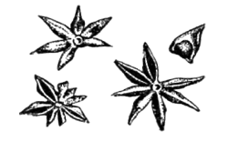

Бадьян (Anisum stellatum)
")
Синонимы: звездчатый анис, китайский анис, индийский анис, сибирский анис, корабельный анис. Плоды дерева Illicium veram Hook семейства магнолиевых. Родина — Юго-Восточный Китай. Культивируется, кроме Китая, в Индокитае (Вьетнам, Камбоджа), а также в СССР — в Абхазии.

В качестве пряности употребляют сухие зрелые плоды бадьяна. Они представляют собой соплодия, состоящие обычно из 8, а иногда из 7, 9, 10 и 12 плодиков, соединенных между собой в виде многолучевой звездочки. Каждый плодик, или зубчик, имеет форму лодочки темно-коричневого цвета, жесткой, деревянистой на ощупь. В молотом виде бадьян представляет собой крупнозернистый порошок, местами желто-коричневый, местами с красновато-бордовым отливом.
На вкус бадьян сладковато-горьковат, по запаху напоминает анис, но запах бадьяна значительно ароматичнее, тоньше и сложнее.
По химическому составу он отличается от аниса наличием эфирного масла сафлор. Это отличие становится особенно заметным при нагревании бадьяна, т. е. в процессе приготовления пищи. Кроме того, бадьян лишен свойственной анисовому аромату приторности. Вот почему встречающееся иногда в книгах по кулинарии указание, что бадьян можно заменить анисом, и наоборот, неправильно. Это может касаться лишь ограниченного ассортимента сладких блюд, да и в этом случае аромат блюда при замене бадьяна анисом будет совсем другим. Более разнообразный, чем у аниса, многосторонний, по-иному ведущий себя в смесях аромат и привкус бадьяна обусловливает и более широкий диапазон его применения.
В России бадьян издавна являлся непременным компонентом при выпечке разнообразных сортов русских пряников и коврижек. Отсюда традиционное применение бадьяна в нашей стране в мучных кондитерских изделиях — пряниках, кренделях, печенье. В этих случаях бадьян закладывается в тесто в процессе его приготовления. Аромат развивается в момент готовности изделия и служит одним из главных признаков готовности.
Менее часто бадьян применяется у нас при приготовлении других сладких блюд и изделий: компотов, муссов, киселей, варенья, пудингов, творожных паст, которым он способен сообщить исключительно тонкий, пряный, изысканный аромат. Добавление бадьяна, например, в вишневое варенье не только улучшает вкус изделия, придавая ему особую свежесть и усиливая аромат, но и способствует наилучшему сохранению естественного цвета и высокого качества варенья, которое не засахаривается в течение трех лет.
В сладкие блюда бадьян закладывается за 5—10 минут до готовности, в кипящую жидкость, причем затем блюдо надо закрыть крышкой и обязательно дать бадьяну настояться.
Как совершенно самостоятельная пряность (реже — в сочетании с другими пряностями) бадьян употребляется в производстве различных напитков, в первую очередь водок, настоек, ликеров (в Западной Европе, особенно во Франции), а также при изготовлении жаждоутоляющих безалкогольных напитков (сбитней — в России, бадьяновой воды — в странах Юго-Восточной Азии). Менее распространено в европейских странах применение бадьяна при изготовлении маринадов и солений из фруктов и ягод. Здесь бадьян чаще всего используется наряду с другими пряностями как один из компонентов маринада.
Совсем редко употребляется у нас бадьян при приготовлении мяса и домашней птицы. А вот в Китае, Бирме, Корее, Японии, на Филиппинах, в Индонезии и странах Индокитая бадьян добавляют к жареному мясу или птице (особенно фазанам, курам и цыплятам) — он резко улучшает аромат блюд, делает их пикантными, неожиданными по вкусу, а само мясо более нежным и мягким. В этом случае бадьян употребляется обязательно в молотом виде (им посыпают мясо, как солью, только гуще), причем лучше всего в сочетании с растительными маслами.
Норма закладки бадьяна в жидкие сладкие блюда (компоты, кисели)—1 или 2 зубчика, либо 1/4 чайной ложки порошка на 1,5 литра; для мясных блюд норма вдвое, иногда втрое выше, чем для сладких, и достигает 1 грамма на порцию.
В странах Юго-Восточной Азии и Дальнего Востока бадьян часто используется в сочетании с другими пряностями (чесноком, луком, перцем) для приготовления подливок к овощным, рисовым и яичным блюдам.
Примечание. С бадьяном не следует путать бадьян японский, или ядовитый (Illiciumreligiosum), сходный с ним по внешнему виду, но резко отличающийся неприятным запахом и горьким вкусом, и два растения, имеющиеся на территории СССР и часто неверно называемые бадьяном или баданом. Это, во-первых, бадьян дикий,точнее ясенец, ясенник, волкана (Dictamnusalbus), семейства рутовых, растущий на Кавказе, в Сибири и Средней Азии и содержащий ядовитое эфирное масло с сильным неприятным запахом (он способен вызывать даже ожоги на коже человека), и, во-вторых, бадан (Bergeniacrassifolia) семейства камнеломковых, встречающийся в Сибири (Алтай, Саяны) и особенно в Забайкалье, где его часто используют как местный заменитель чая и как сырье для получения технического танина.